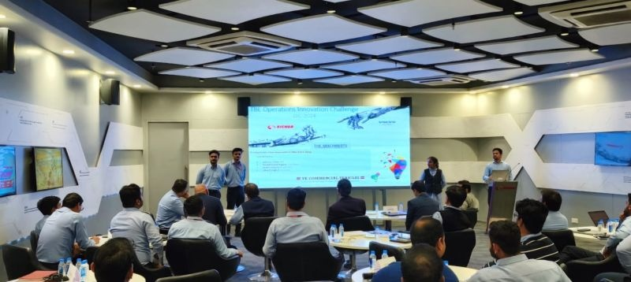
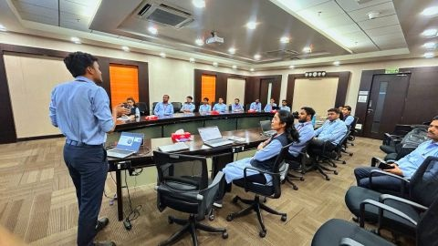
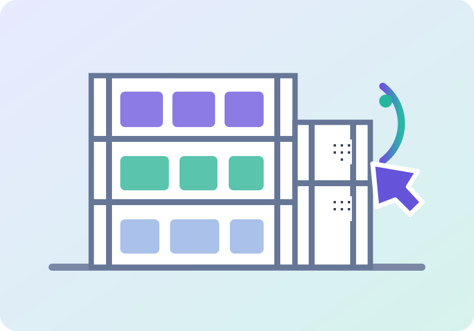
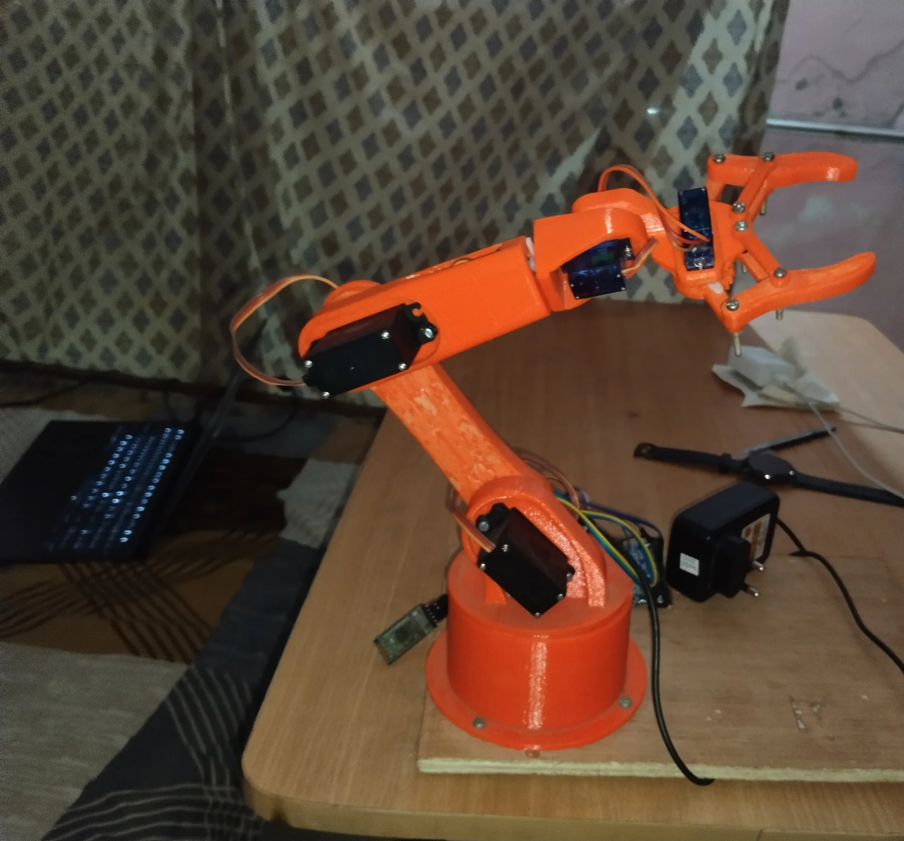
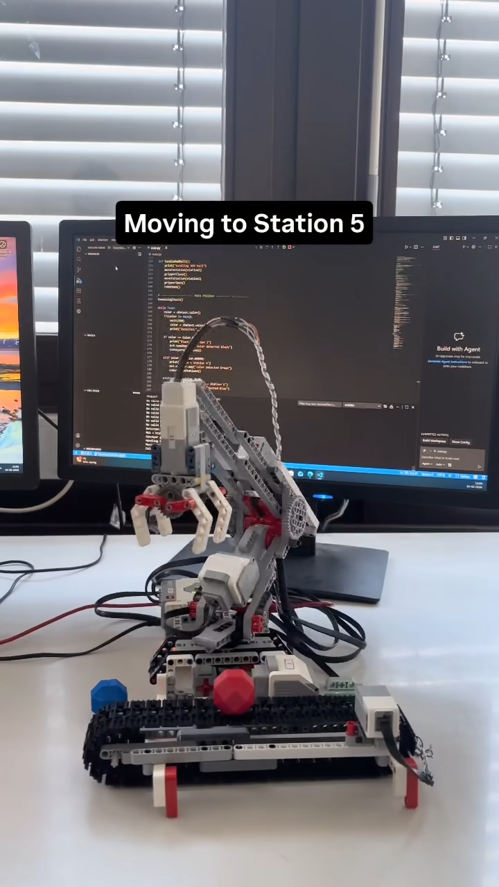
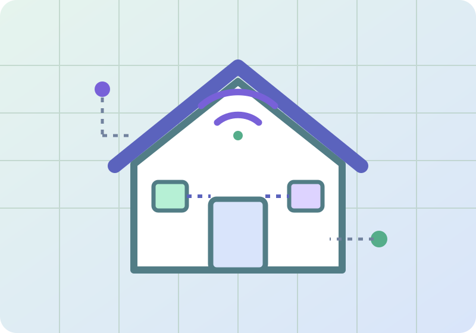
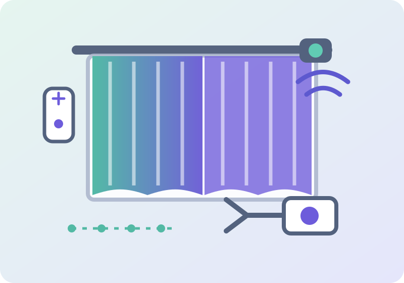
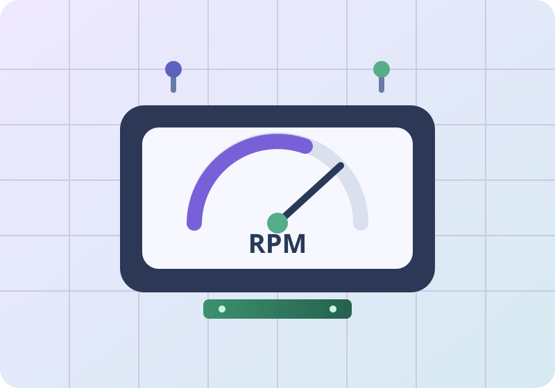

SELECTED PROJECTS
Ideas built
to move.
Selected manufacturing and mechatronics work, from production improvements to robotics prototypes.
PRODUCTIVITY IMPROVEMENT

01
PRODUCTIVITY IMPROVEMENT
Curve conveyor development
Led a team to design, develop, and commission taper-roller curve conveyors, replacing turntables with zero downtime and a 4% improvement in OLE.
4% OLE improvementZero downtimeTaper rollersPneumaticsSensors
Read project details →
CAPACITY & COMMISSIONING

02
CAPACITY & COMMISSIONING
Machine shop capacity enhancement
Contributed to a machine-shop capacity project targeting an increase from 75,000 to 80,000 units per year, commissioning six HMC and two VMC machines.
CNC commissioningHMCVMCAutoCADCmk / CpkFixtures & tooling
Read project details →
WAREHOUSE & MATERIAL FLOW

03
WAREHOUSE & MATERIAL FLOW
SAP EWM storage facility upgrade
Part of a team that upgraded storage facilities for EURO-7 and CNG cylinder-head and block variants using SAP EWM workflows, QR scanning, and dynamic bins.
SAP EWMQR scanningDynamic binsInventory controlWorkflows
Read project details →
PICK & PLACE ROBOTICS

04
PICK & PLACE ROBOTICS
5-DOF robotic arm
Designed and fabricated a five-degree-of-freedom robotic arm for pick-and-place tasks, with 3D-printed parts, Arduino servo control, kinematics, and an Android interface.
CATIA V53D printingArduinoServo motorsKinematicsMIT App Inventor
Read project details →
AUTONOMOUS SORTING

05
AUTONOMOUS SORTING
Color-based object sorting manipulator
Developed a Python-controlled LEGO EV3 manipulator to sort objects on a conveyor by color, using inverse kinematics and color, touch, and encoder sensors.
PythonLEGO EV3Inverse kinematicsSensors
Read project details →
SMART HOME

06
SMART HOME
IoT-based home automation
Built a voice-controlled home automation prototype for two LED bulbs and a fan using NodeMCU8266, Blynk IoT, Google Assistant webhooks, and a relay.
NodeMCU8266Blynk IoTGoogle AssistantIFTTTRelay
Read project details →
EMBEDDED AUTOMATION

07
EMBEDDED AUTOMATION
Smart curtain opening device
Designed a Bluetooth-controlled curtain opener with an Arduino Uno, HC-05 module, L298N motor driver, DC motor, and screw-and-nut motion.
Arduino UnoHC-05 BluetoothL298NDC motorMotion control
Read project details →
SPEED MEASUREMENT

08
SPEED MEASUREMENT
Digital tachometer
Developed a PCB-based digital tachometer using an Arduino Nano and IR sensor to measure rotational speed and display live RPM on a 16×2 LCD.
Arduino NanoIR sensorPCB16×2 LCDI2C
Read project details →
FRONT-END PRACTICE
Small builds, steady progress.
A selection of web development practice projects from GitHub and LinkedIn.